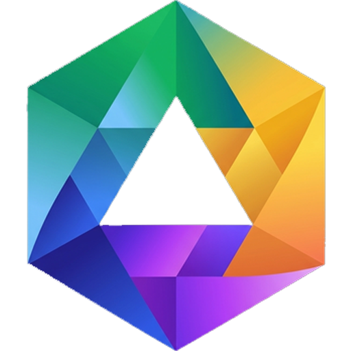

API System Enhancer
Architecture Presentation Integrated System Enhancer

API System Enhancer
Architecture Presentation Integrated System Enhancer
サーバー接続
赤マークあり — マーク部分のみ編集します
Architecture Presentation Integrated System Enhancer
